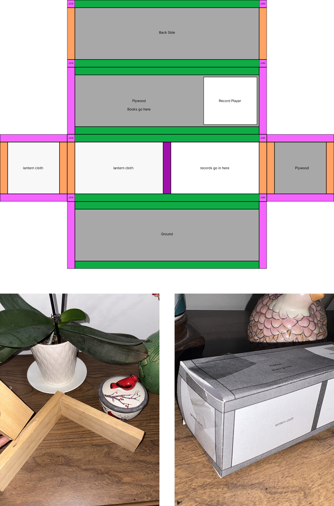
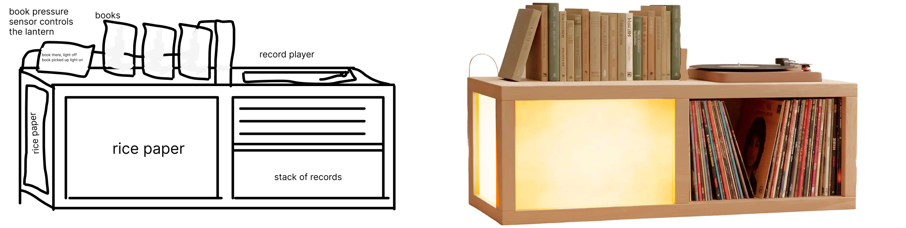
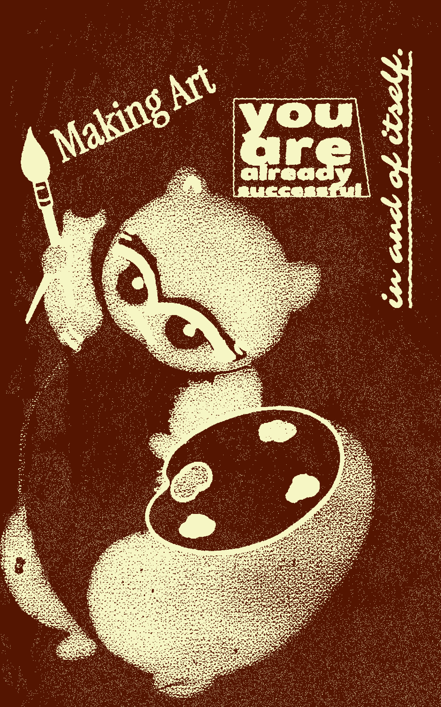
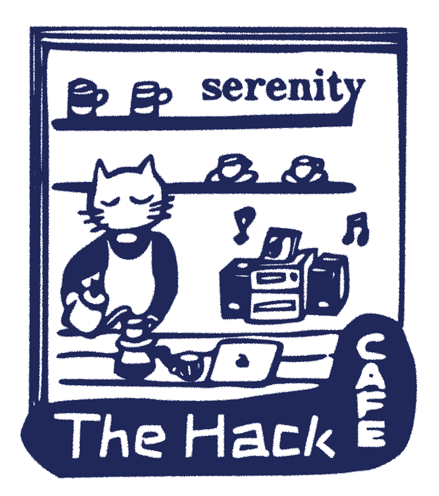

Experimenting w/ making a unity game
Today I made a physical paper mock-up of the furniture I designed concept art for yesterday.
I designed a concept art for a piece of furniture. AI mock-up too.
Today I made this:
I made a wallpaper for my laptop. It's a combination of these little squares I found with a new text: "in life we are always becoming" -- a play on my normal "in life we are always learning"
It's close to the new year, perhaps this is a new mindset about becoming someone and each day evolving into that person. It acknowledges not just growth but in general the change.

I made a poster for my apartment. It was stolen from something I found on Pinterest, edited, and printed from a Korean poster-printing website I came across.
